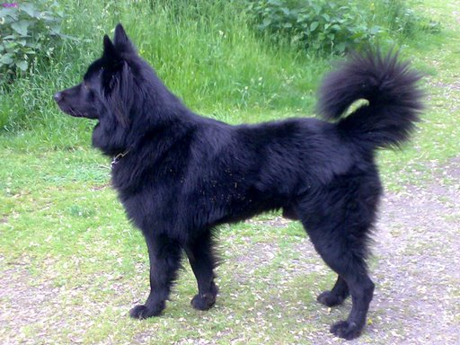

Je vais dans cette rubrique vous parler des besoins propres à cette race de chien. L’Altdeusche Schäferhund, comme toute chien de berger nécessite d'être stimulé intellectuellement comme physiquement, ce n'est pas un chien qui pourra rester toute la journée couché à se reposer. Ainsi, il est nécessaire de le sortir au moins deux heures par jour, et c’est vraiment le minimum, en lui proposant une activité pour le dépenser. Par exemple, quand il est encore chiot, vous pouvez lui lancer la balle, et lui apprendre à ce qu'il vous la rapporte, et quand il sera plus grand, qu’il aura un an, vous pourrez remplacer la balle par le frisbee. Mais ce n'est pas l'unique chose que vous pouvez faire, l'Altdeusche Schäferhund sera très heureux de participer des activités sportives avec vous, comme le cani-cross, le VTT, la randonnée, l’agility, … La race n’étant cependant pas reconnue en France par la FCI, vous ne pourrez participer à des disciplines de mordant (comme la FCI). Vous pouvez aussi lui apprendre à pister des objets dans la maison que vous aurez cachés, ou bien réaliser avec lui de l’obéissance rythmée pour le dépenser intellectuellement. Notez tout de même qu’il n’est pas nécessaire de posséder un jardin pour ce type de chien, tant que vous le dépensez assez, il sera très heureux. A titre d’exemple, il ne sera pas aussi sportif qu’un berger belge malinois, mais tout autant qu’un berger allemand de travail. De plus, c’est un chien de famille, il est très important pour lui qu’il soit impliqué dans la vie et les activités familiales, d’un tempérament très affectueux, il doit se sentir aimé de tous les membres de la famille. Il ne sera pas heureux en restant toujours seul, quand il sera loin de vous, où quand il ne pourra pas participer à vos loisirs et votre quotidien. Ne le faites donc pad dormir dehors, ni rester loin de vous toute la journée, il ne sera pas heureux ainsi. A ce sujet, il est aussi important qu’il ne reste pas trop souvent seul. Il supporte certes mieux la solitude que le berger blanc suisse par exemple, mais ne pourra tout de même pas rester tout seul 8 heures en continu par jour sans en devenir très malheureux et faire à des dégâts à la maison. Assurez-vous donc d’avoir du temps à lui consacrer et de pouvoir rentrer le midi pour vous occuper de lui si vous travaillez. Pour terminer, il est aussi indispensable de jouer régulièrement avec lui dans la maison, n’hésitez donc pas à lui acheter beaucoup de jouets pour que vous puissiez participer à ses séances de jeu.

Vous souhaitez revenir sur la page d'acceuil ? Cliquez ici
Vous pouvez aussi vous renseigner sur son caractère ici